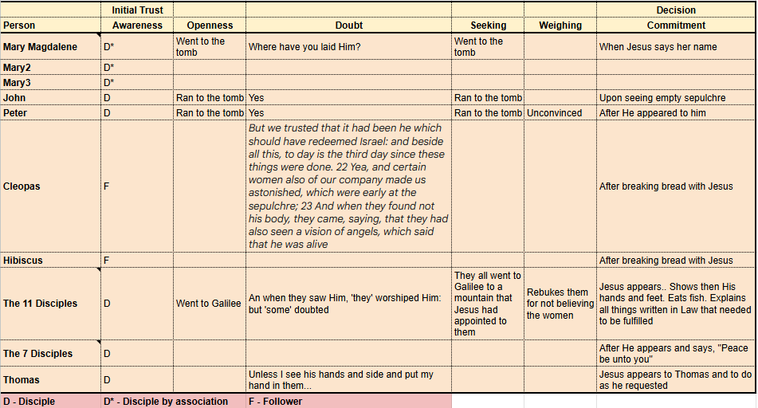
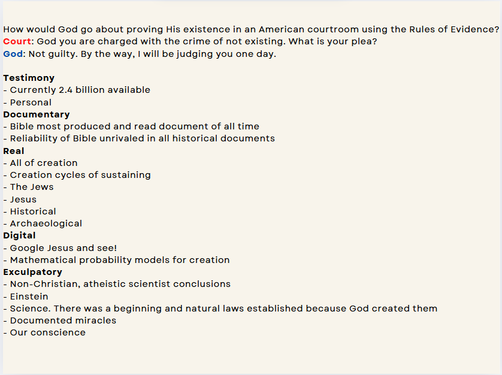
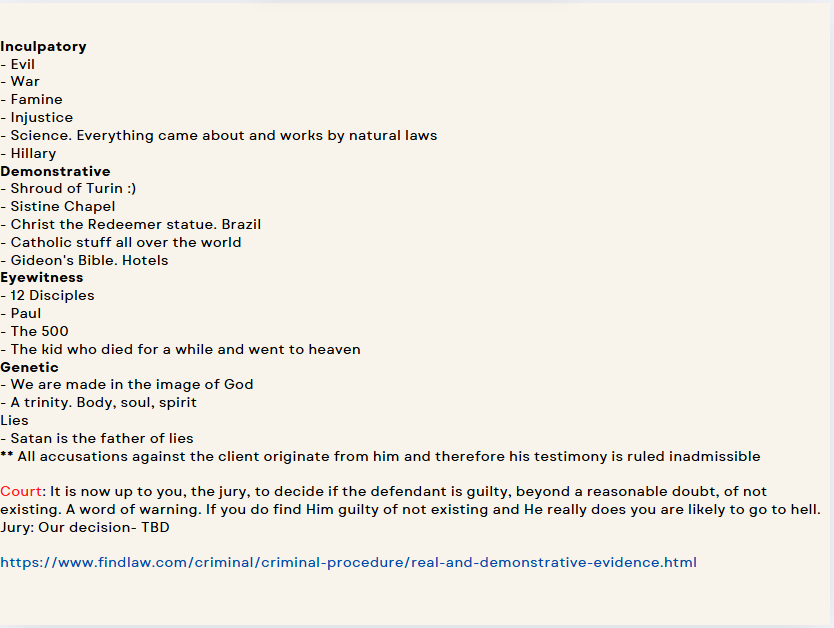

Brothers, a few days ago I sent an email asking what it actually takes for someone to believe in Jesus. I think it's different for everyone. I say that because over Easter I looked closely at how the disciples and followers each came to believe He'd truly risen from the dead, exactly as He said. Thomas stood out to me — “Unless I see His hands and side and place my finger and hand in them, I will not believe.” He's completely clear about what he personally needs. And from my own experience, I'm fully convinced Math and Science — especially Physics and Cosmology — prove God exists. I post about it on Facebook regularly, and I always get pushback from friends. Oddly enough, it's rarely my engineering friends. Much like Thomas, that tells me people simply have a different standard, or a different need, for proof than I do. It frustrates me. Why can't we agree on a standard? Science has one. Our legal system has one, even if it's a little vaguer — belief follows only above “reasonable doubt.” I can work within either framework. But when someone tells me “I just don't believe,” I'm stuck. I can ask why not until I'm blue in the face. I wish they'd just tell me: I need X, Y, and Z to believe.
Below is a table someone put together tracing exactly that — how each of the resurrection witnesses, from Mary Magdalene to Thomas, moved from awareness to doubt to seeking to full commitment:

I wonder if that would make a good Fellowship Night question — everyone goes around and says what it actually took for them to finally believe in Jesus, to commit to Him. And it doesn't have to be limited to the moment of salvation. I didn't believe a lot of things at the time of mine. Probably that Jesus was real, somehow the Son of God (whatever that meant), somehow able to forgive me by dying for me on the cross. I guess that He loved me. But my belief kept growing as I read the Bible and got to know Him. It wasn't long before it lined up perfectly with the Apostles' Creed — but it didn't start there. Just a thought.
I've wrestled with this my entire Christian life. I can't let it go — I have to know why someone doesn't believe. The evidence is so overwhelming. All God had to do to establish the reliability of Jesus and the Bible, in my opinion, was give us a level-5 case — not much more than the evidence we have for the Iliad, and that would've been enough. Instead of a 5, He gave us something more like 100,000. That's why this bothers me so much. If God went to all that trouble to hand us astronomical evidence, how can we so easily dismiss it? Okay, I'm back on my rant again. Sorry.
— Erv
Here's the case for God's existence laid out like an American courtroom would weigh it, using the actual categories our legal system recognizes as evidence:


Comments